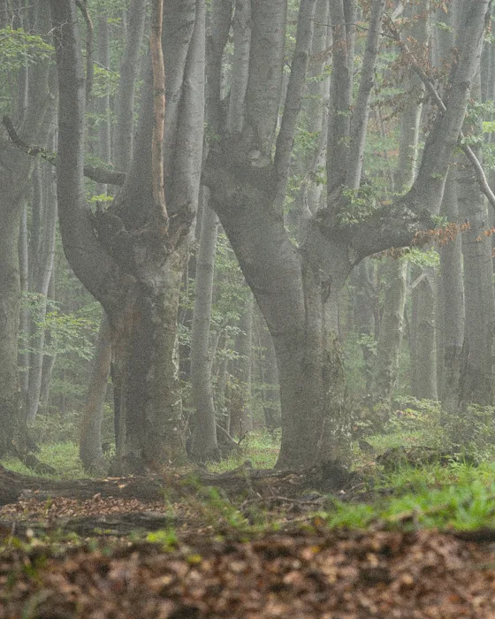
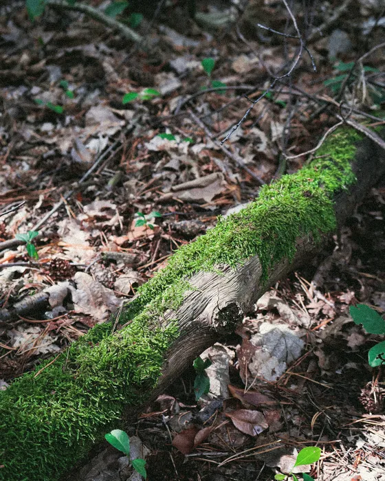
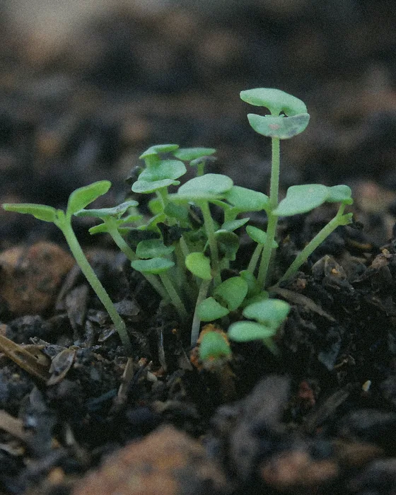
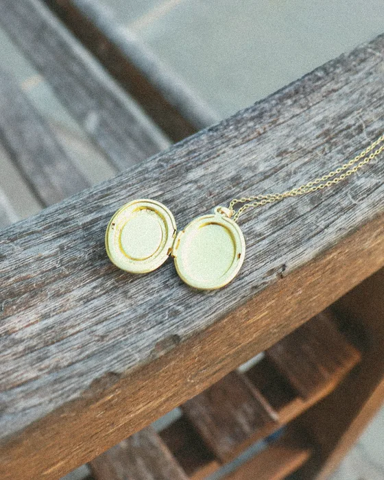

Baum- und Waldbestattung Baumbestattung in Essen: Friedwald, Ruheforst und Baumgräber auf dem Friedhof
Für eine Baumbestattung in Essen müssen Sie nicht weit fahren. Die Urne wird an den Wurzeln eines Baumes beigesetzt, in einem Bestattungswald in der Region oder auf einem Friedhof hier in Essen. Ich helfe Ihnen, den passenden Ort zu finden, und kümmere mich um den ganzen Ablauf.
Im Trauerfall jederzeit erreichbarVorsorge: Montag bis Freitag ab 10 Uhr nach Vereinbarung · Samstag und Sonntag nach telefonischer Vereinbarung
Ich rufe Sie gern zurück
Ich rufe Sie persönlich zurück.

01Kurz erklärt
Baumbestattung in Essen: wie sie abläuft und wem sie passt
Bei einer Baumbestattung wird der Verstorbene zuerst eingeäschert. Die Asche kommt in eine Urne, die sich im Boden auflöst, und wird im Wurzelbereich eines Baumes beigesetzt. Einen Grabstein gibt es nicht, und um die Pflege müssen Sie sich nicht kümmern. Am Baum kann eine kleine Tafel mit dem Namen angebracht werden.
Eine Baumbestattung passt zu Menschen, die den Wald geliebt haben oder ihren Angehörigen keine Grabpflege hinterlassen möchten. Für manche ist auch der Gedanke tröstlich, dass über ihnen ein Baum weiterwächst. Mir liegt diese Form besonders nah: Bäume sind ohnehin mein Thema, und in meinem Schaufenster in Frintrop stehen Birkenstämme, manche 1,80 Meter hoch.
Wie bei jeder Feuerbestattung gelten in NRW feste Fristen: Die Einäscherung muss innerhalb von zehn Tagen stattfinden, die Urne wird innerhalb von sechs Wochen beigesetzt. Mehr zum Ablauf steht auf meiner Seite zur Feuerbestattung in Essen.
- Urne
- Bestattungswald oder Friedhof
- in NRW erlaubt

02Ablauf
Die Trauerfeier im Wald kann ganz verschieden aussehen
Oft gehen alle nach einer kurzen Ansprache gemeinsam zum Baum. Dort wird die Urne in die Erde gelassen, und es bleibt Zeit für ein paar Worte oder ein Lied. Ob Blüten oder ein Brief mit ins Grab dürfen, legt der Träger fest. Das kläre ich vorher.
Wer nicht gut zu Fuß ist, kann sich auch vorher verabschieden. Eine Trauerfeier mit dem Sarg in einer Trauerhalle oder Kirche in Essen ist vor der Einäscherung möglich. Die Beisetzung im Wald findet dann später im kleinen Kreis statt.
Bei Regen oder Kälte rate ich zu festen Schuhen und einem Schirm. Und wenn ein Angehöriger den Weg nicht schafft, überlegen wir gemeinsam, wie er trotzdem dabei sein kann.
Was ich für Sie übernehme
-
Ich erkläre Ihnen die Unterschiede zwischen den Wäldern und den Baumgräbern in Essen.
-
Ich begleite Sie in den Wald, wenn Sie den Baum aussuchen.
-
Ich kläre mit dem Träger den Termin für die Beisetzung und die Regeln vor Ort.
-
Ich kümmere mich um die Einäscherung, die Urne und die Behördengänge.
-
Ich plane mit Ihnen den Abschied im Wald, auf Wunsch mit einer Rede oder mit Musik.
-
Ich bringe die Urne selbst zur Beisetzung.
03Möglichkeiten
Baumgräber gibt es auch auf Friedhöfen in Essen
Auch ohne Fahrt in einen Wald außerhalb der Stadt ist eine Baumbestattung möglich. Die Stadt Essen hat 2011 naturnahe Urnenbaumgräber auf dem Parkfriedhof und dem Südwestfriedhof eingeführt. 2019 kamen Baumgräber auf dem Friedhof Kettwig dazu, in einem bewaldeten Bereich mit vor allem Buchen.
Für den Friedhof Kettwig hat die Stadt bei der Eröffnung 2019 zum Beispiel diese Regeln genannt: In einem Baumgrab können bis zu vier Urnen beigesetzt werden. Die Asche liegt in einer Bio-Urne im Wurzelbereich. Den Platz zeigt eine Plakette in Form eines Ahornblatts am Baum oder eine Nummer aus Keramik am Grab. Grabschmuck und Grablichter sind dort nicht erlaubt. Das Nutzungsrecht gilt 25 Jahre.
Ein Baumgrab auf einem Essener Friedhof liegt nah, und Sie können es oft besuchen. Ob die Regeln heute noch so gelten und welche Baumgräber auf welchem städtischen Friedhof gerade frei sind, frage ich für Sie bei der Friedhofsverwaltung an.
Bestattungswälder liegen rund um Essen
Wer einen richtigen Wald sucht, findet in der Region mehrere Bestattungswälder, zum Beispiel in Herten, in der Lintorfer Mark bei Ratingen, bei Hagen, in Cappenberg bei Selm oder am Möhnesee. Etwas weiter entfernt liegen Wälder im Bergischen Land und am Niederrhein.
Jeder Wald ist anders. Manche sind eben und gut zu begehen, andere liegen am Hang. Manche haben einen Andachtsplatz für die Trauerfeier, und manche bieten Führungen an, bei denen Sie sich den Wald in Ruhe ansehen können. Oft lohnt es sich, zwei Wälder anzusehen, bevor Sie sich entscheiden. Ich fahre gern mit Ihnen hin.
Je nach Wald können Sie auch die Art des Grabes wählen: einen Baum für sich allein, einen Familienbaum für mehrere Urnen oder einen Platz an einem Gemeinschaftsbaum.
Beim Aussuchen helfen ein paar Fragen:
- Wie oft möchten Sie den Baum besuchen, und wie kommen Sie hin?
- Sind die Wege auch mit Rollator oder Rollstuhl zu schaffen?
- Gibt es einen überdachten Platz für die Trauerfeier, falls es regnet?
- Wie lange bleibt das Grab bestehen, und darf später ein Partner dazukommen?
- Soll der Baum ein Laubbaum sein, der sich mit den Jahreszeiten verändert, oder ein Nadelbaum, der immer grün bleibt?
Den Baum können Sie in manchen Wäldern schon zu Lebzeiten aussuchen
In manchen Bestattungswäldern können Sie Ihren Baum schon zu Lebzeiten aussuchen und reservieren. Ob das in Ihrem Wunschwald geht, frage ich gern für Sie nach. Das nimmt Ihren Angehörigen eine Entscheidung ab, und Sie wissen, wo Sie einmal liegen werden. Bei einer Führung können Sie sich verschiedene Bäume zeigen lassen und vergleichen. Manche Paare suchen gemeinsam einen Familienbaum aus.
Halten Sie den Wunsch zusätzlich in einer Bestattungsvorsorge fest, mit dem Namen des Waldes und der Nummer des Baumes. Dann ist im Trauerfall alles klar.
04Rechtslage in NRW
Friedwald, Ruheforst und Bestattungswald sind verschiedene Namen für Ähnliches
Viele sagen „Friedwald“, wenn sie eine Bestattung im Wald meinen. FriedWald ist aber der Name eines Anbieters, ebenso wie RuheForst. Daneben gibt es Bestattungswälder anderer Träger und Baumgräber auf ganz normalen Friedhöfen.

Für Sie macht das rechtlich keinen großen Unterschied, denn in NRW gilt ein Bestattungswald als Friedhof. Wie jeder Friedhof hat auch jeder Wald eigene Regeln, etwa dazu, welche Urnen erlaubt sind, ob Blumen abgelegt werden dürfen und wie lange ein Grab bestehen bleibt. Diese Regeln erkläre ich Ihnen, bevor Sie sich entscheiden.
Grundlage: Bestattungsgesetz NRW (öffnet in neuem Tab); Stadt Essen, Grün und Gruga · Stand: November 2026
05Kosten
So setzen sich die Kosten zusammen
Die Rechnung hat zwei Teile: meine Leistungen und das, was andere berechnen. Im Angebot steht beides getrennt.
Kosten persönlich besprechen
Meine Leistungen
Überführung, Versorgung, Urne und Behördengänge
Begleitung bei der Wahl des Baumes
Planung des Abschieds im Wald
Gebühren und Kosten Dritter
Ärztin oder Arzt, zweite Leichenschau, Krematorium
Standesamt: Sterbeurkunden
Friedhof oder Bestattungswald: Baumgrab und Beisetzung
Ich bin transparent: Schicken Sie mir Ihre E-Mail-Adresse, dann bekommen Sie von mir eine Kostenübersicht.
Martina Kißelbach
06Häufige Fragen
Häufige Fragen zur Baumbestattung in Essen
Möchten Sie sich einen Wald oder ein Baumgrab ansehen? Rufen Sie mich zu meinen Bürozeiten an oder bitten Sie um einen Rückruf. Im Trauerfall erreichen Sie mich auch nachts und am Wochenende.

Ist eine Baumbestattung nur mit Urne möglich?
Im Bestattungswald ja, dort werden nur Urnen beigesetzt. Auch die Baumgräber der Stadt Essen sind Urnengräber. Vorher wird der Verstorbene eingeäschert.
Darf ich Blumen oder Kerzen an den Baum bringen?
Oft nicht. Für die Baumgräber auf dem Friedhof Kettwig hat die Stadt Grabschmuck und Grablichter ausgeschlossen, und in Bestattungswäldern gelten oft ähnliche Regeln. Ich sage Ihnen vorher, was an Ihrem Ort gilt.
Wie lange bleibt ein Baumgrab bestehen?
Das legt der Träger fest. Für den Friedhof Kettwig hat die Stadt ein Nutzungsrecht von 25 Jahren genannt. In Bestattungswäldern kann es anders sein.
Braucht es eine besondere Urne?
Ja. Beigesetzt wird in einer Urne, die sich im Boden auflöst. Auf dem Friedhof Kettwig ist das eine Bio-Urne. Welche Urnen ein Bestattungswald zulässt, kläre ich mit dem Träger.
Wovon hängen die Kosten ab?
Vor allem vom Ort, vom Baum und davon, ob Sie einen Einzel- oder einen Familienbaum wählen. Dazu kommen die Kosten der Feuerbestattung. Jeden Posten erkläre ich Ihnen, bevor Sie etwas beauftragen.
Kann die Familie bei der Beisetzung dabei sein?
Ja. Die Beisetzung im Wald ist ein Abschied für alle, die kommen möchten, im kleinen Kreis oder mit vielen Gästen.
Können Ehepaare an einem Baum liegen?
Ja, mit einem Familien- oder Partnerbaum. Für die Baumgräber auf dem Friedhof Kettwig hat die Stadt bis zu vier Urnen je Grab vorgesehen. Wer gemeinsam an einem Baum liegen möchte, sucht ihn am besten zusammen aus.
Was passiert, wenn der Baum umstürzt?
Dann wird in der Regel an derselben Stelle ein neuer Baum gepflanzt, und die Grabstätte selbst bleibt unberührt. Wie das im einzelnen Wald geregelt ist, kläre ich mit dem Träger.
Muss der Wald in Essen liegen?
Nein. Einen Bestattungswald können Sie in der Regel frei wählen, auch weiter weg. Die Urne bringe ich dorthin, wo sie beigesetzt werden soll.
07Weitere Wege
Weitere Wege des Abschieds
-

Reerdigung
Im Pilzsarg wird der Körper in etwa 40 Tagen zu Erde, in Schleswig-Holstein.
- Pilzsarg
- Schleswig-Holstein
- ich informiere Sie
-

Erinnerungsschmuck
Ein Anhänger, Ring oder Armband mit dem Fingerabdruck, nur über Bestatter erhältlich.
- Fingerabdruck
- Anhänger, Ring oder Armband
- nur über Bestatter
-
Diamantbestattung
Was in NRW möglich ist: ein Erinnerungsdiamant aus Haaren.
- Haar
- Hersteller in der Schweiz
- aus Asche in NRW nicht vereinbar
Alle besonderen Bestattungen Alle Bestattungsarten im Überblick
Kontakt
So erreichen Sie mich

Martina KißelbachIhre Bestatterin in Essen
Telefonisch im Trauerfall jederzeit erreichbar. Für Vorsorge und alle anderen Fragen: Montag bis Freitag ab 10 Uhr nach Vereinbarung · Samstag und Sonntag nach telefonischer Vereinbarung. Kommen Angehörige von weiter her, etwa aus München oder Hamburg, führe ich das Gespräch auch am Samstagabend oder Sonntagvormittag.
- Büro
- Montag bis Freitag ab 10 Uhr nach Vereinbarung
Samstag und Sonntag nach telefonischer Vereinbarung - Adresse
- Kißelbach Bestattungen e.K.
Frintroper Str. 432, 45359 Essen
Rückruf anfordern
Ich rufe Sie persönlich zurück – so bald wie möglich oder zu Ihrer Wunschzeit.